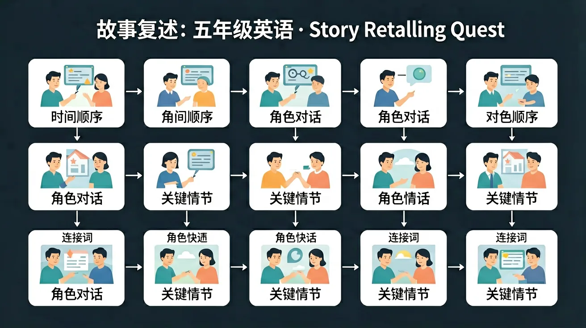

五年级英语故事复述 · 和熊熊讲故事！
Story sequencing · Characters · Retelling · 5W1H
🐻 今天熊熊要带你一起读故事、排顺序、学复述！
认识这些故事常用词，准备好了吗？
🐻 熊熊提示：点击卡片翻看中文意思！这些词在今天的故事里都会出现哦。
拖拽故事片段，排列正确顺序
Long ago, three little pigs left home to build their own houses. The first pig built a house of straw — it was quick but not strong. The second pig built a house of sticks. The third pig worked very hard and built a house of bricks.
Then came the Big Bad Wolf! He huffed and puffed and blew down the straw house, then the stick house. But he could NOT blow down the brick house! The wolf tried to sneak in through the chimney, but the clever third pig had a pot of boiling water waiting. The wolf ran away and never came back!
🔀 拖拽排序：把故事情节排成正确顺序
认识故事角色，用5W1H分析故事
👥 认识角色：点击角色卡了解他们的特点
❓ 5W1H 问题
用你自己的话复述故事！
📝 Story Timeline — 故事时间轴
💬 Sentence Starters — 可以这样开始：
⚔️ FINAL BOSS
The Big Bad Wolf Returns!
📊 成绩详情
🏅 成就展示
继续你的故事复述之旅！
50个精选故事开头句子，让你的复述更生动
连接词大全：时间/转折/因果，让故事更流畅
三只小猪 vs 小红帽：比较两个故事的异同
如果故事结局不同……写你自己的创意结局！
学习要用心，理解比死记更重要；多问"为什么"，把知识连成网
🌍 And（已知）：你已经掌握了一些基础知识
⚡ But（问题）：遇到更复杂的情况还不够用
💡 Therefore（新知）：学习今天的内容，让能力更完整、更系统
和前测对比一下，看看你进步了多少！ 🚀
1. After this lesson, you can?
2. How confident are you about this topic now?
💡 常见错误往往就在细节中，仔细检查每一步！
和 AI 对话，深化对本节课知识点的理解
💬 参考提示词（复制给 AI 使用）：
✨ 可以用上面的提示词与 AI 展开深度对话，AI 会根据你的回答给出个性化指导。
Can you recall the key words or rules from this lesson?
Explain in your own words what you learned today.
Use today's knowledge to make a new sentence or example.
Compare this to something you already know. How are they similar or different? Can you create your own example?
先独立作答，再点选项查看对错与错因。
复述故事开头时，最适合用哪个连接词？
复述兔子说'Don't eat me!'时，应该：
复述兔子想出办法的段落时，最好用：
复述故事时，当要转换场景可以说：'____ the rabbit ran to the river.'
答案：Then
用Then表时间推进
复述结尾时应使用'____'作为结束词。
答案：Finally
Finally用于故事收尾
哪个选项正确使用了故事复述要素？
比较直接背诵和用自己的话复述的效果
❓ 为什么故事里的小狗最后跑掉了？
❓ 怎么记住故事里这么多人的名字？
❓ 老师，我复述时老忘记时间顺序怎么办？
学完这一课，这些问题你都能自信地回答。
🎯 能说出故事中的关键事件顺序
🎯 能判断角色对话中的5W1H要素
🎯 能分析角色行为与故事结果的关联
把故事分成开头-中间-结尾三块积木
用5W1H钥匙打开故事细节宝箱
像对照两幅画一样找角色行为差异
在脑海里放小电影重现场景
用相同结构编新故事（如：迷路的小猫变小狗）
✅ 用姓名标签贴纸辅助记忆
💡 母语思维干扰
✅ 画时间轴箭头图
💡 未建立时间标记意识
口诀：Who-What-When-Where记清楚，Why-How最后补
类比：像搭公交车要记住站点顺序，故事事件也要排好队
复述故事应该最先说：
5W1H不包括：
And：学生知道故事有开头、中间、结尾
But：但复述时容易漏掉关键事件
Therefore：本模块教用时间词串联故事
故事像积木，要有顺序才能搭好。比如《三只小猪》中：1.第一只小猪用稻草盖房（开头）→2.大灰狼吹倒房子（中间）→3.三只小猪躲进砖房得救（结尾）。用'First...Then...Finally...'这样的时间词，就像给积木涂胶水，能把事件粘牢。
🌍 就像妈妈做菜：先洗菜（First）→再炒菜（Then）→最后装盘（Finally）。少一步味道就不对啦！
用哪个词能正确连接这两个事件？___小猪盖草房，___大灰狼来敲门
And：学生能说出故事里有哪些人物
But：但分不清谁重要谁次要
Therefore：本模块教用5W1H抓主角
主角就像生日蛋糕上的樱桃，最显眼！找主角要问5W1H：1.Who出现最多？（小红帽出现8次，猎人只出现2次）2.What主角做什么？（小红帽送蛋糕，猎人打狼）3.Why推动故事？（小红帽不听劝导致遇险）。其他角色像蛋糕胚，是辅助。
🌍 就像班级合照：老师站在中间（主角），因为她组织活动最多；举班牌的同学（次要角色）只出现一下下。
《龟兔赛跑》中谁是主角？为什么？
And：学生能复述故事大意
But：但缺少生动细节
Therefore：本模块教用形容词+数字添彩
细节像彩虹糖，让故事更有味道！比如不说'大灰狼敲门'，而说'毛茸茸的大灰狼用爪子咚咚咚敲了3下门'。记住公式：角色+特征（形容词）+动作+数量。就像《金发姑娘》里：'她尝了第1碗烫烫的粥，第2碗冰凉的粥，第3碗刚刚好的粥'。
🌍 就像描述你的书包：'我有1个蓝色书包'不如'我有1个印着航天员的、沉甸甸的蓝色书包，能装下5本课本+3支笔'生动！
哪个句子最适合复述《小红帽》的篮子细节？
And：学生能按顺序讲出故事
But：但像背课文不自然
Therefore：本模块教用表情+动作演绎
复述不是背课文，要像小主播那样生动！三大法宝：1.表情（说到大灰狼瞪圆眼睛）2.动作（学小猪盖房子擦汗）3.语气（用颤抖声说'谁...谁在敲门？'）。比如演《拔萝卜》：'老爷爷'要弯着腰，'嗨哟嗨哟'喊号子，最后大家一起摔倒要'哎呀'叫出来。
🌍 就像体育委员喊操：'向左——转！'要响亮有力，如果小声嘟囔，全班就乱啦！
复述《三只小猪》时，哪种方式最生动？
